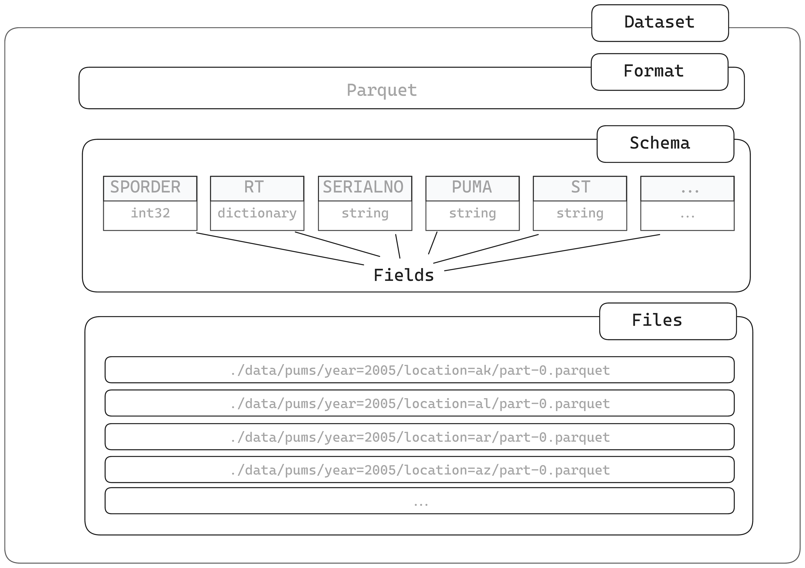
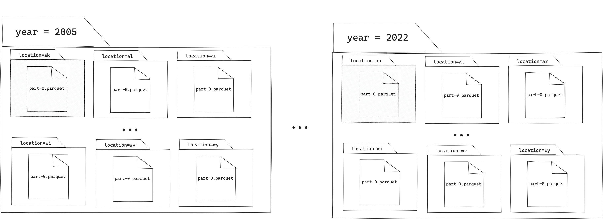

The examples in Chapter 5 discussed working with data stored in single files, which can be manipulated in R as data frames or Arrow Tables. These are helpful when you have data which is small enough to fit in your R session, but what about when it isn’t? This is when Arrow Datasets are needed.
You’ve examples of working with Arrow Datasets in Chapters 3, and now we’re going to dive deeper into the details. In this chapter, we’re going to take a look at exactly what Datasets are, how they work, working with non-default options, and how to really optimize for performance.
One note before we get started: we’ll use “Datasets” to refer to the concept of an Arrow Dataset object itself, and the word “dataset” if we’re just talking about a collection of data in a more general way.
Datasets don’t represent data loaded into memory, but instead contains information about:
where the files in the Dataset are located
what format the files are in
what the schema of those files is—the column names and types

Dataset components
If we take a look at the PUMS person dataset, we can see that it contains a total of 832 files, which are in Parquet format.
You may notice that the directories in which the files are stored related to variables in the dataset: year and location. This way of structuring data is known as partitioning, and we’ll be looking at this in more detail in a later section.
There are a few important ways in which an Arrow Dataset is different to an Arrow Table:
Tables contain data in memory, whereas Datasets are a representation of the data on disk without being loaded into memory
Datasets do not have an inherent concept of ordering as there is no guarantee as to the order in which files in a Dataset will be read in
More importantly, there are several ways that an Arrow Dataset is similar to an Arrow Table:
You can use familiar dplyr syntax to construct and execute queries using both
They both use the standard, modern, and rich Arrow type system
They both can be passed to other systems that know about the Arrow format without serialization, either using more processing in the arrow R package, or using other projects such as DuckDB or pyarrow
There are two typical workflows that we see people using when working with larger-than-memory datasets, depending on whether their focus is data engineering or data analysis.
6.1 ETL
ETL stands for Extract, Transform, and Load, and it describes a data-engineering process in which data is ingested from one or more sources, some transformations are applied to it, and then it’s loaded into some sort of data repository or warehouse ready for analysis. It is particularly useful when the process by which data is generated involves appending new rows of data, such as web traffic logs. As we have discussed before, row-oriented data stores are not optimized for analytic queries, so ETL is useful to process the raw data into a form that is better suited to analysis.
In the context of arrow, you’d typically start with raw data which is larger than memory, potentially modify it, and write it out in a more helpful format with partitions that are useful for analyzing. One important thing to know here is that because arrow writes datasets one piece at a time, you don’t have to worry about your dataset being larger than memory. You can use the same code that works on data in memory—which has quick feedback and you can see if things are going well—as you do for the full dataset that might take many minutes or even hours to process and is impossible to load into memory all at once.
Partitioning here is not technically critical, but this is the stage where it is easiest to introduce or change a dataset’s partitioning strategy. We’ll talk more on how to pick a strategy later in the chapter.
The other workflow where we work with larger-than-memory datasets is when scanning the dataset and aggregating values—the stage that may happen after having done ETL. Effective use of partitioning is important here. In an analysis-focused workflow, you may want to do things like calculating grouped summaries. For example, we can compute the average commute time in Washington by year from the census data:
In this chapter, we’ll be looking at topics relevant to both of these workflows, and discussing the different ways you can work with datasets with arrow.
6.3 Functions for reading and writing datasets
We’ve already looked at some examples using the open_dataset() function. The previous examples used Arrow and Parquet datasets, but Arrow supports the same formats for datasets that it does for working with individual files: CSV and similar text-delimited formats, Parquet, Arrow IPC format, and line-delimited JSON.
Format
Reading
Writing
Parquet
open_dataset()
write_dataset()
CSV or other delimited file
open_dataset(…, format = “csv”), open_csv_dataset(),
open_delim_dataset()
write_dataset(…, format = “csv”)
Line-delimited JSON
open_dataset(…, format = “json”)
(Not supported)
The convenience functions open_csv_dataset() and open_delim_dataset() are wrappers around open_dataset(..., format = "csv") but using arguments which match read_csv_arrow() and read_delim_arrow() to make it easier to switch between working with individual files and multifile datasets by just changing the function call.
In this chapter we’ll focus on the practicalities of working with different formats in the context of Arrow Datasets, but if you want a reminder of the general advantages and disadvantages of working with the different file formats, see Chapter 5. As a reminder, we recommend working with Parquet format if you can. Parquet files are already smaller and faster to work with than text-based, delimited files, but there are further advantages of using Parquet when working with multifile datasets. Because Parquet files contain metadata, Arrow can make use of this information when working with datasets. This metadata contains information about rows and columns, which means that when using data pipelines using dplyr::filter() or dplyr::select(), Arrow can use the metadata to work out which data to scan instead of having to check the values in every single file or smaller component. This can significantly speed up analyses of larger datasets.
6.4 Partitioning
We have already been working with partitioned data: the data in the PUMS person dataset has been partitioned based on the “year” and “location” columns.
 Partitioning is where groups of rows of data have been saved to separate files. These separate files are saved in directories, where each directory represents the rows of the data where a particular column has a particular value.
You’re not limited to a single level of directories; you can have multiple nested levels. The PUMS person dataset has “year” at the top level and “location” in the next level down. What this means is that there are 17 directories at the top level: one for each of the years in the dataset, which range from 2005 to 2022. Within each of these year directories, there are 52 subdirectories; one for each of the different locations. In total, we end up with 884 bottom-level directories, and inside each of them there is a single Parquet file for each year/location combination.1
One thing to note is that the data in the column that we partition by is not included in the columns within the Parquet files themselves. This is partially to conserve data: rather than include the same value over and over again inside the Parquet files, it is put once in the directory name. More importantly2 though, this prevents the possibility of having two columns which disagree with each other. What should happen if the directory says year=2008, but the column year in the file is all 2020?
There are many reasons to work with partitioned data—you may have received the data in this format, or you may have chosen to partition your data to take advantage of improved performance on data analysis and smaller file sizes.
In the next section we’ll talk about how to work with partitioned data.
6.4.1 Hive and non-Hive partitioned data
Writing the data to directories which are given names based on the column name and value as key-value pairs is called Hive-style partitioning, named after Apache Hive, where this first was introduced as a convention.
Arrow will automatically look for Hive-style partitions when passed in the name of a directory. One of the benefits of using Hive-style partitioning is that the column names are encoded into the directory names themselves. This means that when we open our Parquet format PUMS dataset, we don’t need to do anything extra for the year and location values in the directory names to be recognized as part of the dataset schema.
open_dataset("./data/person")
What if the data we are working with isn’t stored with Hive-style partitions? We might need to work with data which is partitioned, but the directory names are just the values of the partitioning column without the name, for example, a directory simply called 2022 instead of year=2022, and so on for the other years. This is sometimes referred to as non-Hive-partitioned data.
Let’s take a look at an example of this, and write the dataset to a new directory, but this time, using just the value of year in the directory name. We can do this by passing in the parameter hive_style = FALSE into our call to write_dataset().
To get Arrow to recognize that we want to include the directory name as a column in our dataset, we need to tell it do this by manually specifying the partitioning argument in our call to open_dataset().
Because this filesystem path is text-based, Arrow must do type inference on this path to guess what type the partition variable should be. Arrow tries its best to get this right, but sometimes you might want to add the data type for the partitioned columns. This can be useful if you have a type that looks like a number, but should actually be a character (like we discussed in the previous chapter on files and formats). Additionally, it can be helpful for specifying different data size of integers like we do here. For example, the maximum 16-bit integer is 32767, and that can safely accommodate year for the foreseeable future, so there’s no reason to store it as a 32- or 64-bit integer. This is very similar to how we would specify data types when creating a schema. We do this by using the hive_partition() function, and we specify the column name and type:
The use of Hive-style partitioning when saving datasets is a helpful way of ensuring that we automatically read in the partitions as variables, without additional manual intervention. Hive-style partitioning is also a common enough standard in data systems these days that it has become something of a standard itself.
6.4.2 Partitioning data using dplyr::group_by()
In the examples above, we showed examples of writing partitioned data by using the partitioning argument to write_dataset(). Alternatively, if you have data which has been grouped using dplyr::group_by(), arrow will automatically write the data to partitions based on this grouping. For example, if we wanted to partition the PUMS dataset solely on year (but not location), we could open the dataset, use group_by() to change the partitioning, and then write a new copy to a new directory.
Another common use case is to create a completely new variable to use to partition our data. For example, what if we want to partition the dataset based on different age groups? We can create a new column in our data using group_by() and case_when() to create this new variable based on the values in the AGEP column. We can then write the new dataset to disk using write_dataset(), specifying the path where we want to save the data, and which variables to partition on.
In all of the examples so far, we’ve been writing data to different directories each time. If we were to use existing directories, there are different values which can be specified to the existing_data_behavior option which change how how Arrow behaves when it encounters data already present in those directories:
"overwrite": the default value; replaces any files with the same name as files to be written but leave any extra files there
"delete_matching": entirely deletes any data in any partitions which are going to be written to
"error": raise an error message if existing data is found
Depending on your data and what you’re trying to do, it’s important to consider which of these options is the best fit for you if writing to directories which already contain data. If you are expecting to be replacing all of the data in a directory which currently has 3 Parquet files in it, but you only write the first one this time, you will have extra rows in your dataset from the second and third Parquet files added back to your dataset when you read it.
In this case, if you’d rather completely delete any existing data in the directory you want to write to, you should set existing_data_behavior to delete_matching and any existing data in that directory will be removed.
Also, consider starting fresh with a new directory when you want to be sure there are no clashes or surprises using the "error" key that will let you know if something is there already.
While data partitioned by directory is simpler to deal with, Arrow also supports working with data partitioned by filename. For example, perhaps you have a dataset where each file contains data for a single day, and the filename is the date in YYYY-MM-DD format.
You can use the add_filename() function to add a column to your dataset which contains the filename of the file that each row of data came from. You can then further manipulate this column to extract just the date component of the filename.
We’ll do this one step at a time. First we call add_filename() to create the new column containing the filename. Then, we use stringr::str_remove() to get rid of the path to the file and the logs_ prefix. Next we use stringr::str_remove() again, to remove the .parquet suffix. We then use ymd() to convert the filename to a date type, and finally use year() to extract the year component of the date. Now we can use this new year column to partition our dataset.
Now you’ve seen that partitioning creates different directories based on the values in the column that you partition your data on, but what about if that column contains NA values? Let’s take a look at what happens. We’ll create a simple toy example to demonstrate.
The data is being saved, as expected, in Hive-style directories, using the key=value pairing. However, when there is an NA value in the grouping column, the value part of the directory name is saved as "__HIVE_DEFAULT_PARTITION__". If you would rather specify your own replacement value, you can use the hive_partition() function to have more control of your data. You’ll need to supply the data types of the partition variable too, and then pass in your chosen default value as the null_fallback parameter.
Now we’ve looked at different ways of creating partitioning, it’s time to take a look at the impact it has on performance.
We’re going to create 4 example datasets to use to demonstrate this:
One big file: all of the PUMS person-level data stored in a single 7.6GB Parquet file
Year-partitioned data: partitioning the PUMS person-level data by year
Year and location-partitioned data: partitioning the PUMS person-level data by both year and location—this is the dataset we’ve already been working with in most of our examples so far
Year, location, and age-group partitioned data: partitioning the PUMS person-level data by year, location, and a new variable we’re going to create called age_group.
Here’s the code to create these datasets.
# 1. Everything on one big fileopen_dataset("./data/person") |>write_dataset(file.path(tmp_dir, "person_onefile"))pums_one_big_file <-open_dataset(file.path(tmp_dir, "person_onefile"))# 2. Partitioned by yearopen_dataset("./data/person") |>write_dataset(file.path(tmp_dir, "person_year"),partitioning ="year" )pums_by_year <-open_dataset(file.path(tmp_dir, "person_year"))# 3. Partitioned by year and location# We don't need to create a new dataset here as# this already is the structure of the datapums_by_year_location <-open_dataset("./data/person")# 4. Partitioned by year, location, and new column age_groupopen_dataset("./data/person") |>mutate(age_group =case_when( AGEP <25~"Under 25", AGEP <35~"25-34", AGEP <45~"35-44", AGEP <55~"45-54", AGEP <65~"55-64",TRUE~"65+" ) ) |>write_dataset(path =file.path(tmp_dir, "person_year_location_age"),partitioning =c("year", "location", "age_group") )pums_by_year_location_age <-open_dataset(file.path(tmp_dir, "person_year_location_age"))
The table below shows how many files in each dataset, as well as the minimum, maximum, and median file size.
Dataset
# of Files
Min size
1st Quartile
Median size
3rd Quartile
Max size
pums_one_big_file
1
7786.3 MB
7786.3 MB
7786.3 MB
7786.3 MB
7786.3 MB
pums_by_year
34
0.1MB
0.1MB
211.8MB
459.9 MB
493MB
pums_by_year_location
1785
0.1MB
0.1MB
0.1MB
6.02MB
56.1MB
pums_by_year_location_age
14124
0.1MB
0.1MB
0.4MB
1.09MB
17.6MB
6.5.1 Querying across all data
First, let’s try running query which just requires filtering the data by one of the partition variables, year, to only include the data from 2018 onwards, and then calculate a summary based on the variable JWMNP, which contains data about commute times, and isn’t a partition variable.
Here’s the results of running that query on Nic’s laptop, with the datasets we created earlier.
Dataset
Query Completion Time (s)
pums_one_big_file
2.2
pums_by_year
1.0
pums_by_year_location
1.8
pums_by_year_location_age
6.5
In this case, the fastest query time was on the dataset which was partitioned solely by year, the only partition column used in the query. In the case of storing the data in one big file, Arrow has to open the file and use the metadata to work out which of the contents to use in the analysis. Partitioning by year means that Arrow can entirely disregard the partitions containing years that aren’t relevant here. When we say “entirely disregard”, we mean that it doesn’t even read any part of the Parquet file at all during the query—not even the header.
We can also see from this that having additional unnecessary partitions will slow things down: the dataset partitioned by all of year, location, and age, was by far the slowest.
6.5.2 Querying with results grouped by partition variables
Above we saw that a query that uses the only partitioning columns shows the best performance compared to other partitioning strategies. So next let’s take a look at how the query times compare when all 3 of the partition variables are relevant to the query. We can set up another query in which we group our results by our 3 partition variables.
We ran it again on Nic’s laptop, and these were the results.
Dataset
Query Completion Time (s)
pums_one_big_file
4.6
pums_by_year
3.2
pums_by_year_location
3.3
pums_by_year_location_age
11.5
The final query was tested without the call to mutate() as the column already existed as a partition, but this made little difference to the overall time—too many partitions create an overhead because Arrow has to open too many different files. There’s a relatively fixed cost to opening and reading any Parquet file, no matter how big that file is. When we have many small files, we have to spend more time reading in the relatively fixed size of the Parquet header data and metadata, on top of the time spent reading the actual data. When thinking about how we organize our partitions, there is a balance to be struck between how many files there are to read in, and avoiding reading in more of the data than we need to.
The specific contents of the query we want to run on the data is also important here. One key difference between this query and the previous one is that the partition variable were all used in calls to group_by() and not filter().
6.5.3 Querying with partition variables used to filter the data
Let’s try one more time to see what happens when we need to filter on all three variables.
Once again, we removed the call to mutate() for the dataset which already had the age_group partition variable.
Dataset
Query Completion Time (s)
pums_one_big_file
3.6
pums_by_year
2.5
pums_by_year_location
2.2
pums_by_year_location_age
0.8
This time the differences were a lot more marked! As you can see in the table above, it’s the variables most commonly used for filtering which partitions have the most impact on.
We don’t recommend repartitioning your data every time you want to run a query on your dataset, as the overhead of time spent rewriting the data to disk means it probably won’t be worth it. What we’d recommend instead is thinking about which variables you use most frequently in calls to filter() in your analyses, and store your data in partitions based on these variables.
As we saw above, reading only the data from disk that is important for a query is the fastest way to process that data. What this means is that if we know that specific Parquet files only include rows that we don’t care about—because they don’t match the conditions in the filter—then skipping over them entirely is best. Partitioning based on common filters means that arrow can skip over files entirely when they are in partitioned like this.
That said, it’s important not to create too many files, because for each Parquet file read in from disk, there is a relatively fixed amount of metadata that must be read alongside the data. This metadata includes things like the schema of the data and other statistics about the data in the file. The more Parquet files you have, the more of this fixed, extra information has to be read in. Having files smaller than 20MB will typically mean considerably more reading of that metadata compared to reading actual data itself. Equally, having files larger than 2GB means that you’re no longer able to take advantage of Arrow’s ability to read multiple files in parallel.
The number of levels of partitioning is also important While writing this book, we tried to test out an example which used an extra level of partitioning as well as year, location, and age_group, as well as partitioning on the PUMA (Public use microdata area code) column, which has thousands of unique values. However, it took over 3 hours to write to disk, produced around 800,000 files, and took up 81GB on disk. The sheer quantity of files which needed writing, and the overhead in terms of storage size (and also query time if analyzed later) caused by the associated file headers and metadata, meant that it just wasn’t feasible to include this, even as an example!
Getting partitioning correct is a balancing act and there is no single configuration that will work for all data and all queries. The unique characteristics of your data and your typical queries will determine the best partitioning for your data.
6.5.4 Tuning writing paramaters
There are more options to further control partition-writing behavior. The default values for these options are good for most workflows. However, in some circumstances, you might want to change them to get optimum performance. If you are seeing poor performance, or your data happens to be peculiar (you have a huge number of columns, you have a huge number of partition values, etc.) you might find tuning these values can improve performance.
The sections below contain options you can tune and are ordered from most likely to need tuning to least likely. For some of these settings, if you find yourself needing to tune it, that’s actually an indication that your data setup is not optimal for your situation. This most commonly happens when you have too many and too small partitions. You will think you need to adjust these values to get good write performance, but as we saw above, having too many and too small partitions hurts the performance of reading and analysis as well. In those situations, rather than tune these settings, it’s better to adjust your partitioning strategy.
6.5.4.1max_rows_per_file
The maximum number of rows in each file.
If you have particularly large partitions, it can sometimes be helpful to limit the number of rows in each Parquet file. This is helpful if you’re finding you are having memory issues while writing datasets because it will write to disk a chunk of data even if it’s not the full partition.
6.5.4.2max_rows_per_group
The maximum rows allowed in a single group and when this number of rows is exceeded, it is split and the next set of rows is written to the next group
Arrow tries to write as large row groups as possible—the default maximum number of rows is just over one million. Row groups of this size are usually a good thing because they provide a balance between containing enough data to make compression effective and still having the benefit of being able to skip row groups when reading data based on the group-level statistics.
If your data has a very large number of columns, or contains data that is particularly large (e.g. a large number of long character strings in each column), you might want to reduce this number to make your row groups smaller.
6.5.4.3min_rows_per_group
Write the row groups to the disk only when this number of rows or more have accumulated
By default, any number of rows can be written to a row group. What determines how many rows are written to a row group is complicated when there is no minimum, but in some circumstances, might lead to very small row groups. If you find that the Parquet files in your output datasets contain row groups that have a very small number of rows, try adjusting this setting. Note that changing this setting can result in a large increase in how much memory is used—Arrow already generally tries to write as large row groups as possible.
6.5.4.4max_partitions
The maximum number of partitions any batch may be written into
If you have a partitioning column that has an extremely large number of unique values, this setting is one you could consider changing. Note that if your partitioning column does have a large number of unique values, that is almost always a sign that you should not be partitioning by this variable. If you are tuning this option, you should first re-evaluate your partitioning strategy.
6.5.4.5max_open_files
The maximum number of files that can be left opened during a write operation
The more files we allow to be kept open at once, the less likely it is that Arrow will need to write multiple Parquet files per partition. However, keeping too many files open at once can lead to high memory consumption and other performance issues. This naturally creates a tension between minimizing the number of files that need to be written, and minimizing the amount of memory required for file writing.
Operating systems generally do not allow for a very large number of files to be open at once—common limits at the time of writing are between approximately 1024 and 4096. There are sometimes ways to raise this limit at the filesystem level, but these limits are there for a reason: they help the filesystem effectively interact with the underlying storage.
Arrow, by default, sets this to be slightly below the common lower bound for file limits. This way it generally works with most operating systems. In most circumstances, this should not be changed, but if you find yourself with a large number of small Parquet files in your partitions, increasing this number might help. Be sure, however, to consult with the operating system you’re running on before increasing this. Exceeding their limit will cause issues, and circumventing their limits is almost always a mistake.
6.5.4.6 An example of tuning max_rows_per_file
We won’t go into details about each of the possible settings above, but as an example, let’s look at the maximum number of rows in each file. Let’s say we want to restrict each file to contain 500,000 rows or fewer; to do this, we can pass in the max_rows_per_file parameter.
We can also see here that the default name for the file in each partition is part-i.parquet where i is the file number in that directory with values starting from 0.
To summarize, the following advice can be followed about partitioning your data:
partition on the variables you filter on most often
avoid ending up with partitions smaller than 20MB or larger than 2GB
avoid ending up with a large number of files
when in doubt, experiment with some queries which are typical of your usual workflow
There are extra considerations to pay attention to around partitioning if you are working with data in cloud storage; see Chapter 7 for more information on this.
6.6 Schemas
When you create an Arrow dataset, unless you supply the schema yourself, arrow will infer it automatically. In the case of formats like Parquet which include metadata about the columns types, arrow’s default behavior is to set the schema by reading in the first file in the dataset, and using the information in its metadata to create the schema.
If you’re working with a format which doesn’t contain this additional metadata, such as CSV, arrow will read an initial block of data in the first file it scans, and infer the data type of each column based on the values it finds. The default block size when arrow reads CSV data is 1 megabyte—so the number or rows used to infer the schema will vary depending on the data in each column, total number of columns, and how many bytes each value takes up in memory. If all of the values in a column that lie within the first 1MB of the file are missing values, arrow will classify this data as null type. Sparsely populated data, or variables that are not defined for a large enough subset of the data, can trigger this scenario. Generally, we recommend specifying a schema when working with CSV datasets to avoid potential issues like this. You can read more about type inference in Section 5.2.2.
Regardless of dataset format, leaving the default value of the parameter unify_schemas set to FALSE means that arrow will use the schema of the first file it encounters as the schema for the dataset. This works well when you can be confident that all of your files have the same, correct, schema. However, if not, we recommend that you either:
manually specify the schema of the dataset, or
tell arrow to scan all files in the dataset and combine their schemas with the argument unify_schema = TRUE
Use the second option when you are confident that the schemas for individual files are correct, but are not sure that each file in your dataset contains every possible column from the overall dataset. It can also be helpful as a check to confirm that the schemas of all of the files are compatible with each other. In other words: you don’t have one column, split across multiple files, but containing different data types in different files, some of which are incompatible with each other.
6.6.1 Specifying a dataset schema
You can extract the schema of a dataset by calling the schema() function:
Let’s say we wanted to update the schema of dataset. We could view the entire schema by inspecting the pums_schema object, or look at a single column like this:
pums_schema[["AGEP"]]
Field
AGEP: int32
Say we instead wanted this column representing age, instead of being a 32 bit integer, to be an 8 bit integer. Eight bit integers have a maximum value of 127, which seems reasonable given the verified oldest person in the world was 122! We can update the value in the schema object by assigning the new type, and then re-opening the dataset with the updated schema.
We can then take a look at the type of the column in the updated version of the dataset, and we can see it is our new value.
schema(pums_person_updated)[["AGEP"]]
Field
AGEP: int8
For more on manipulating schemas, see Section 5.2.2.
6.6.2 Schemas from datasets with different columns in each file
If you are working with a directory of files in which some files have some columns missing, but you want your final dataset to contain every possible column, you can tell arrow to check the columns present in all files and then combine these to form the dataset schema.
Setting this option as TRUE may result in slower dataset initialization since arrow has to read the schema from every file in the dataset.
6.7 Sources
In the examples so far, we’ve showed creating datasets based on setting the sources argument to the parent path where the files in your dataset are stored, but you can also pass any of the following to sources:
a path to a single file
a list of files stored in multiple directories
the URI of a directory on cloud storage, for example, an S3 bucket
a list of dataset objects
6.7.1 Datasets consisting of individually-specified files
Generally, the simplest way to work with datasets is if all of the files that you want to be part of your dataset are in the same directory, but what if you want to include files from multiple locations? It is possible to work with files in multiple directories in arrow by passing in a list of files to open_dataset().
Although this will work, arrow will no longer automatically detect Hive partitions as variables in your dataset. This means that our year column will not be found:
pull(head(ds), "year")
Error in `pull()`:
! Can't extract columns that don't exist.
✖ Column `year` doesn't exist.
6.7.2 Excluding files based on filename or file validity
You may have extra files you want to store alongside your dataset files, but they aren’t actually the row and column level data. For example, you might have a text file that includes a data dictionary in each folder next to each Parquet file in your dataset. You don’t want to read in those text files when you are reading in the Parquet files.3 You can specify extra options to open_dataset() to exclude these files from your dataset.
Let’s say you have a directory containing your dataset, but also containing metadata in each subdirectory.
If you call open_dataset() on this directory, you’ll get an error message as arrow will try (and fail) to read in the data_info.txt files as Parquet files.
Error in `open_dataset()`:
! Invalid: Error creating dataset. Could not read schema from '/home/runner/work/book/book/PUMS_smol/transient_data/person_with_metadata/year=2021/data_info.txt'. Is this a 'parquet' file?: Could not open Parquet input source '/home/runner/work/book/book/PUMS_smol/transient_data/person_with_metadata/year=2021/data_info.txt': Parquet magic bytes not found in footer. Either the file is corrupted or this is not a parquet file.
ℹ Did you mean to specify a 'format' other than the default (parquet)?
However, you can set an option which tells arrow to ignore all files beginning with “data_”.
This approach may be slower than the previous one as arrow has to try to read in all of the files to see if they are valid, but can be useful when there is no common prefix to exclude files by.
6.7.3 Combining datasets
You may have datasets that consist of files in multiple formats. For example, perhaps you have a nightly ETL job that turns CSV to Parquet, but you want to analyze all of the data, including the newest CSV-only data that hasn’t been converted to Parquet yet.
You still need to be able to work with the old data as well as the new data, and analyse it together. In arrow it is possible to combine multiple datasets into a single dataset. First, we create a dataset from the Parquet data. In the example below, all we need to do is pass arrow the path to the Parquet dataset. The creation of the CSV dataset requires a bit more effort as we can’t rely on the use of metadata to help us, like with the Parquet data. We need to pass skip = 1 so the header row isn’t read in as data, manually set the schema of the CSV data using the schema from the Parquet dataset, and also pass in another schema describing the partitioning variable. We can then use dplyr::union_all() to combine our 2 datasets into one.
In this chapter, we looked at working with Arrow Datasets to work with larger-than-memory data. We discussed how partitioning data based on columns in the dataset allows us to store the data across multiple files and directories. We saw that the simplest strategy for deciding how to partition your data is to choose columns that you often filter your data on, but ultimately, it’s worth experimenting with your own data and seeing what works best for your particular workflow. We saw at how schema inference works with Parquet and CSV files, as well as how to create datasets consisting of files from multiple sources.
Though it is typical to have a single Parquet file in each directory, that is not a requirement. Arrow will read any files that are in that folder and join them together as if they were in one file. Depending on the structure of your data this might be because of how it was batched when it was written, but generally we can ignore that it happens.↩︎
In fact, with modern compression algorithms and modern data formats like Parquet, a column that has a single value would end up taking very little space. This was much more of an issue when working with CSVs and other formats that couldn’t take advantage of per-column compression.↩︎
Also, where would that data go? The Parquet files already have the schema they need.↩︎